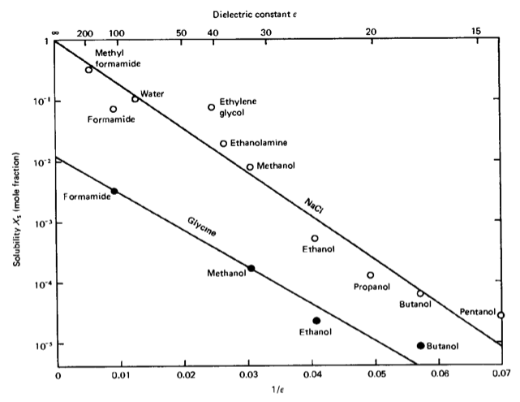

While we have discussed in the previous sections the thermodynamics of systems and the kinetics of phase transitions, we have made as few as possible assumptions on the interactions between the liquid components of a mixture to highlight the importance of entropic and other effects. Now, we would like to have a close look at the possible types of interactions and their order of magnitude in soft matter systems. We may classify the interactions in the following way: - covalent interaction (chemical binding), - electrostatic (Coulomb), - dipolar (vdW), - hydrogen bonding, - dispersion (vdW), - fluctuation, depletion (entropic).
These interactions deliver the forces that hold soft matter together, even though the phases are characterized by density, free energy and entropy, but not by the forces.
Code
import numpy as npimport matplotlib.pyplot as pltfrom numpy.linalg import normfrom scipy.constants import c,epsilon_0,e,physical_constants%config InlineBackend.figure_format ='retina'# the lines below set a number of parameters for plotting, such as label font size, # title font size, which you may find usefulplt.rcParams.update({'font.size': 14,'font.family':'sans-serif','axes.titlesize': 16,'axes.labelsize': 18,'axes.labelpad': 14,'lines.linewidth': 1,'lines.markersize': 10,'xtick.labelsize' : 18,'ytick.labelsize' : 18,'xtick.top' : True,'xtick.direction' : 'in','ytick.right' : True,'ytick.direction' : 'in',})
11.1 Pairwise interaction energy
Before we go into further details, we may have a look at some general behavior again. Let us assume that the interaction energy between two atoms/molecules is given by
For a material, which has a number density \(\rho\) and, thus, the total number \(\rho 4πr^2 \mathrm{d}r\) molecules in a shell between \(r,r+\mathrm{d}r\) around a molecule, we obtain the following total interaction energy per molecule (the standard chemical potential):
The total interaction energy, and thus also the property of the system will, consequently, depend on the size \(L\) of the system, except we assume \(n>3\) and \(L>>σ\), where \(σ\) is the size of the molecule. This states nothing else, that long range interactions may yield system-dependent properties or bulk properties that do not depend on the volume size only if objects become small. Obviously, Coulomb interactions or dipolar interactions may not satisfy the above assumptions.
11.2 Cohesive energy of a liquid
We can find out some general rule about the cohesive energy of a molecule with its neighbors in a liquid by comparing the molar gas and molar liquid volumes. A typical gas molar volume is \(22.400~ \mathrm{cm^3/mol}\), while this is only \(20~ \mathrm{cm^3/mol}\) for a liquid. If liquid and gas coexist at a certain temperature \(T\), then the chemical potential of gas and liquid must be the same, i.e.:
\[
\mu^{0}_{\mathrm{gas}} + k_{\mathrm{B}} T \ln(X_{\mathrm{gas}}) = \mu^{0}_{\mathrm{liq}} + k_{\mathrm{B}} T \ln(X_{\mathrm{liq}})
\]
(with \(X\) the dimensionless concentration in the respective phases, e.g., \(X_{\mathrm{gas}} = 1/22.400\)) or
\[
\mu^{0}_{\mathrm{gas}} - \mu^{0}_{\mathrm{liq}} \approx -\mu^{0}_{\mathrm{liq}} = k_{\mathrm{B}} T \ln\left( \frac{X_{\mathrm{liq}}}{X_{\mathrm{gas}}} \right) \approx 7 k_{\mathrm{B}} T
\]
assuming that there is essentially no cohesive energy in the gas phase. At the vaporization temperature \(T_{\mathrm{B}}\), the energy required to release one mole of molecules from its cohesion with its neighboring molecules to the gas phase is thus
per mole, or \(9 k_{\mathrm{B}} T\) per molecule. If we assume that each molecule has on average 6 neighbors in a liquid, then we obtain a value of \(\frac{3}{2} k_{\mathrm{B}} T\) as energy per molecular pair. This approximate rule is called Trouton’s rule and gives only a very rough estimate of the cohesive energy, as it completely neglects the details of the interactions. However, it demonstrates why thermal energy is important in soft matter.
Trouton’s rule
The molar latent heat of vaporization, which is a measure for the cohesive energy of a liquid, is approximately
The simplest but at the same time also one of the most important types of interaction is the electrostatic interaction, e.g., of simple charges. This type of interaction is important not only due to its relevance in biological systems, but the electrostatic interaction is in principle the only one delivering a long-range repulsive force.
11.3.1 Charge–charge interactions
Charge–charge interactions are mediated by electric fields. Assume that we have a charge \(Q_1\) that creates an electric field
For such a charge assembly at the distance \(r\), an energy is stored, which is the potential energy of assembling these two charges from infinity. The free energy of the two charges thus reads
If we evaluate this energy, for example, for a sodium and a chlorine ion at a distance of \(r = 0.276\, \mathrm{nm}\), we find a free energy of interaction of \(w = -8.4 \cdot 10^{-19}\, \mathrm{J}\), which corresponds to about \(200\, k_{\mathrm{B}}T\) at \(300~\mathrm{K}\) temperature. This is on the same order of magnitude as covalent interactions. It requires about \(3~\mathrm{nN}\) to break this bond. The long-range character of electrostatics becomes clear when evaluating the distance at which this interaction becomes comparable to \(k_{\mathrm{B}}T\): \(r = 56\, \mathrm{nm}\). This is only considering a pair of ions. In a NaCl crystal, multiple neighbors contribute to the interaction energy of one sodium ion with its surroundings. One sodium ion has 6 \(\mathrm{Cl^-}\) neighbors at a distance of \(r = 0.276\, \mathrm{nm}\), 12 \(\mathrm{Na^+}\) neighbors at \(\sqrt{2}r\), and further 8 \(\mathrm{Cl^-}\) neighbors at \(\sqrt{3}r\), and so on. We have to sum up all the interaction energies for the total cohesive energy of the sodium ion in the crystal:
The factor in front of the Coulomb term (the one in the square brackets) is termed the Madelung constant and is known from solid-state physics. It is characteristic for specific lattice types, such as a simple cubic lattice in this case. Note that the cohesive energy of one sodium ion is therefore about \(350\, k_{\mathrm{B}}T\) and is thus much larger than the thermal energy, keeping the NaCl crystal stable. Yet, it can be dissolved in water very easily.
11.3.2 Born energy of solvation
The Born energy of solvation calculates the free energy of assembling a charge inside a dielectric medium of dielectric constant \(\epsilon\). Let us reconsider the free energy:
\[
\mathrm{d}U = \mathrm{d}Q + \mathrm{d}W
\]
\[
\Rightarrow \qquad \mathrm{d}U = T \mathrm{d}S + \mathrm{d}W
\]
\[
\Leftrightarrow \qquad \mathrm{d}W = \mathrm{d}U - T \mathrm{d}S
\]
which leads to
\[
\mathrm{d}F = \mathrm{d}U - T \mathrm{d}S = \mathrm{d}W.
\]
Therefore, the free energy change is related to the energy to assemble a charge:
To find the free energy, we integrated the square of the electric field over the volume (this is equivalent to adding tiny charge elements against previously assembled parts of the charge). According to this, the free energy of a charge \(Q = z e\) per charge in a medium with dielectric constant \(\epsilon\) is
if the charge has a radius \(a\). Now, if we look at the difference between assembling the charge in vacuum (\(\epsilon = 1\)) and in a medium with dielectric constant \(\epsilon\), we find the following difference in the chemical potential (free energy):
which is a measure of the solubility of ions. Inserting the formula for the chemical potential yields the proportionality \(X_{\mathrm{s}} \propto \exp(-\text{const}/\epsilon)\). This dependency on the dielectric constant of the solvent is observed experimentally, though this is only a trend and some solvents deviate from this behavior.

Solubility
Compound
Dielectric constant \(\epsilon\)
Water
78.5
Ethanol
24.3
Acetone
20.7
Hexane
1.9
Polystyrene
2.4
Sodium Chloride
6.0
The reasons for deviations are:
The theory assumes continuous changes in interactions, but in reality, there is local ordering.
Additional interactions like hydrogen bonds exist.
11.3.3 Interactions involving polar molecules
Many molecules exhibit a dipole or even higher moments due to the uneven distribution of charges over the molecular structure. Some atoms have a stronger tendency to accept charges than others, a property typically measured by electronegativity. This gives an idea of whether atoms donate or accept charge when binding to other atoms. While homo-atomic bonds do not have dipole moments, hetero-atomic bonds often do, as shown in the table below:
Bond
Dipole moment [D]
C–C
0
C–N
0.22
O–H
1.51
F–H
1.94
N=O
2.0
Similarly, molecules have different dipole moments depending on their structure:
Molecule
Dipole moment [D]
Hexane
0
Water
1.85
Ethanol
1.7
Acetone
2.9
The dipole moment of a molecule is measured by the displacement of two charges \(\pm q\) from each other:
\[
\vec{u} = q \vec{l}.
\]
Its direction is from the negative to the positive charge. The dipole creates an electric field given by
which shows a similar dependence of the chemical potential on the dielectric constant \(\epsilon\) as in the case of a single charge. As a result, the solubility of polar molecules also depends on the dielectric constant in a manner similar to that of ionic solubility.
The plot below illustrates the electric field of a dipole:
where the last two equations are assuming that the distance between both objects \(r\) is much larger than the extent of the dipole \(l\) itself. From the last equation, we see that the interaction can be either attractive or repulsive. An angle \(θ=0^°\) results in an attractive interaction, while \(θ=180^°\) yields repulsive interaction. Using a single charge (e.g., an \(\mathrm{Na^+}\) ion) and a dipole of \(u=1.85\, \mathrm{D}\) (water molecule) results in an interaction energy of about \(39\, k_\mathrm{B}T\). Ions align and bind polar molecules like water, for example. The alignment is caused by the torque \(\tau=\vec{u}\times \vec{E}\). For arbitrary polar molecules this is called solvation, while for water the term hydration is used. The strength of the hydration can effect the mobility of ions in solution as it makes them effective charges and is of interest, for example, in the study of ion transport through ion channels, as this requires the stripping of the hydration shell.
Example: Sodium Ion Hydration
The plot below shows the ion dipole interaction for a sodium ion and a water molecule as a function of distance.
The table below shows some selected hydration properties of ions. The hydrated radius determines the diffusion of the ion in water. The hydration number is the number of orientationally bound water molecules. Typically, smaller ions have a larger hydration number.
Ion
Bare Ion radius (nm)
Hydrated radius (nm)
Hydration number
Na+
0.095
0.36
4
Mg2+
0.065
0.43
6
Cl-
0.181
0.33
1
OH-
0.176
0.3
3
Source Code
---title: Forces and Interactions in Soft Matterjupyter: python3---While we have discussed in the previous sections the thermodynamics of systems and the kinetics of phase transitions, we have made as few as possible assumptions on the interactions between the liquid components of a mixture to highlight the importance of entropic and other effects. Now, we would like to have a close look at the possible types of interactions and their order of magnitude in soft matter systems. We may classify the interactions in the following way:- covalent interaction (chemical binding),- electrostatic (Coulomb),- dipolar (vdW),- hydrogen bonding,- dispersion (vdW),- fluctuation, depletion (entropic).These interactions deliver the forces that hold soft matter together, even though the phases are characterized by _density_, _free energy_ and _entropy_, but not by the forces.```{python}#| nbsphinx: hidden#| tags: []import numpy as npimport matplotlib.pyplot as pltfrom numpy.linalg import normfrom scipy.constants import c,epsilon_0,e,physical_constants%config InlineBackend.figure_format ='retina'# the lines below set a number of parameters for plotting, such as label font size, # title font size, which you may find usefulplt.rcParams.update({'font.size': 14,'font.family':'sans-serif','axes.titlesize': 16,'axes.labelsize': 18,'axes.labelpad': 14,'lines.linewidth': 1,'lines.markersize': 10,'xtick.labelsize' : 18,'ytick.labelsize' : 18,'xtick.top' : True,'xtick.direction' : 'in','ytick.right' : True,'ytick.direction' : 'in',}) ```## Pairwise interaction energyBefore we go into further details, we may have a look at some general behavior again. Let us assume that the interaction energy between two atoms/molecules is given by\begin{equation}w(r)=-\frac{C}{r^n}\end{equation}with $C$ being an interaction-specific constant, then the force between the two species at a distance $r$ is given by\begin{equation}F(r)=-\frac{\mathrm dw(r)}{\mathrm dr}=-\frac{nC}{r^{n+1}}.\end{equation}For a material, which has a number density $\rho$ and, thus, the total number $\rho 4πr^2 \mathrm{d}r$ molecules in a shell between $r,r+\mathrm{d}r$ around a molecule, we obtain the following total interaction energy per molecule (the standard chemical potential):\begin{equation}\mu^{0}=\int_{\sigma}^{L}w(r)\rho 4\pi r^2 \mathrm dr=\frac{-4\pi C\rho}{(n-3)\sigma^{n-3}}\left [ 1-\left (\frac{\sigma}{L}\right )^{n-3}\right ].\end{equation}The total interaction energy, and thus also the property of the system will, consequently, depend on the size $L$ of the system, except we assume $n>3$ and $L>>σ$, where $σ$ is the size of the molecule. This states nothing else, that long range interactions may yield system-dependent properties or bulk properties that do not depend on the volume size only if objects become small. Obviously, Coulomb interactions or dipolar interactions may not satisfy the above assumptions.## Cohesive energy of a liquidWe can find out some general rule about the cohesive energy of a molecule with its neighbors in a liquid by comparing the molar gas and molar liquid volumes. A typical gas molar volume is $22.400~ \mathrm{cm^3/mol}$, while this is only $20~ \mathrm{cm^3/mol}$ for a liquid. If liquid and gas coexist at a certain temperature $T$, then the chemical potential of gas and liquid must be the same, i.e.:$$\mu^{0}_{\mathrm{gas}} + k_{\mathrm{B}} T \ln(X_{\mathrm{gas}}) = \mu^{0}_{\mathrm{liq}} + k_{\mathrm{B}} T \ln(X_{\mathrm{liq}})$$(with $X$ the dimensionless concentration in the respective phases, e.g., $X_{\mathrm{gas}} = 1/22.400$) or$$\mu^{0}_{\mathrm{gas}} - \mu^{0}_{\mathrm{liq}} \approx -\mu^{0}_{\mathrm{liq}} = k_{\mathrm{B}} T \ln\left( \frac{X_{\mathrm{liq}}}{X_{\mathrm{gas}}} \right) \approx 7 k_{\mathrm{B}} T$$assuming that there is essentially no cohesive energy in the gas phase. At the vaporization temperature $T_{\mathrm{B}}$, the energy required to release one mole of molecules from its cohesion with its neighboring molecules to the gas phase is thus$$U_{\mathrm{vap}} = -N_{\mathrm{A}} \mu^{0}_{\mathrm{liq}} = 7 N_{\mathrm{A}} k_{\mathrm{B}} T_{\mathrm{B}} = 7 R T_{\mathrm{B}}.$$This allows us to estimate the latent heat of vaporization:$$\Delta H_{\mathrm{vap}} = U_{\mathrm{vap}} + pV \approx 7 R T_{\mathrm{B}} + R T_{\mathrm{B}}.$$According to that, the ratio of latent heat of vaporization to boiling temperature is$$\frac{\Delta H_{\mathrm{vap}}}{T_{\mathrm{B}}} \approx 8 R \approx 80 \, \frac{\mathrm{J}}{\mathrm{K \, mol}}$$per mole, or $9 k_{\mathrm{B}} T$ per molecule. If we assume that each molecule has on average 6 neighbors in a liquid, then we obtain a value of $\frac{3}{2} k_{\mathrm{B}} T$ as energy per molecular pair. This approximate rule is called **Trouton's rule** and gives only a very rough estimate of the cohesive energy, as it completely neglects the details of the interactions. However, it demonstrates why thermal energy is important in soft matter.<div class="alert alert-warning">**Trouton's rule**The molar latent heat of vaporization, which is a measure for the cohesive energy of a liquid, is approximately$$\frac{\Delta H_{\mathrm{vap}}}{k_{\mathrm{B}}T} \approx 8R$$with $R$ being the gas constant. </div>## Coulomb forces, charge–charge interactionsThe simplest but at the same time also one of the most important types of interaction is the electrostatic interaction, e.g., of simple charges. This type of interaction is important not only due to its relevance in biological systems, but the electrostatic interaction is in principle the only one delivering a long-range repulsive force.### Charge–charge interactionsCharge–charge interactions are mediated by electric fields. Assume that we have a charge $Q_1$ that creates an electric field$$E_{1} = \frac{Q_{1}}{4\pi \epsilon_{0} \epsilon r^2}.$$We neglect the vectorial character of the electric field to avoid further complications. The electric field creates a force on a second charge $Q_2$$$F(r) = Q_{2} E_{1} = \frac{Q_{1} Q_{2}}{4\pi \epsilon_{0} \epsilon r^2}.$$For such a charge assembly at the distance $r$, an energy is stored, which is the potential energy of assembling these two charges from infinity. The free energy of the two charges thus reads$$w(r) = \int_{\infty}^{r} -F(r)\, \mathrm{d}r = -\int_{\infty}^{r} \frac{Q_{1} Q_{2}}{4\pi \epsilon_{0} \epsilon r^2}\, \mathrm{d}r = \frac{Q_{1} Q_{2}}{4\pi \epsilon_{0} \epsilon r}.$$If we evaluate this energy, for example, for a sodium and a chlorine ion at a distance of $r = 0.276\, \mathrm{nm}$, we find a free energy of interaction of $w = -8.4 \cdot 10^{-19}\, \mathrm{J}$, which corresponds to about $200\, k_{\mathrm{B}}T$ at $300~\mathrm{K}$ temperature. This is on the same order of magnitude as covalent interactions. It requires about $3~\mathrm{nN}$ to break this bond. The long-range character of electrostatics becomes clear when evaluating the distance at which this interaction becomes comparable to $k_{\mathrm{B}}T$: $r = 56\, \mathrm{nm}$. This is only considering a pair of ions. In a NaCl crystal, multiple neighbors contribute to the interaction energy of one sodium ion with its surroundings. One sodium ion has 6 $\mathrm{Cl^-}$ neighbors at a distance of $r = 0.276\, \mathrm{nm}$, 12 $\mathrm{Na^+}$ neighbors at $\sqrt{2}r$, and further 8 $\mathrm{Cl^-}$ neighbors at $\sqrt{3}r$, and so on. We have to sum up all the interaction energies for the total cohesive energy of the sodium ion in the crystal:$$\mu^{0} = -\frac{e^2}{4\pi \epsilon_{0} r} \left[ 6 - \frac{12}{\sqrt{2}} + \frac{8}{\sqrt{3}} - \frac{6}{2} + \ldots \right] = -1.748 \frac{e^2}{4\pi \epsilon_{0} r}.$$The factor in front of the Coulomb term (the one in the square brackets) is termed the **Madelung constant** and is known from solid-state physics. It is characteristic for specific lattice types, such as a simple cubic lattice in this case. Note that the cohesive energy of one sodium ion is therefore about $350\, k_{\mathrm{B}}T$ and is thus much larger than the thermal energy, keeping the NaCl crystal stable. Yet, it can be dissolved in water very easily.### Born energy of solvationThe Born energy of solvation calculates the free energy of assembling a charge inside a dielectric medium of dielectric constant $\epsilon$. Let us reconsider the free energy:$$\mathrm{d}U = \mathrm{d}Q + \mathrm{d}W$$$$\Rightarrow \qquad \mathrm{d}U = T \mathrm{d}S + \mathrm{d}W$$$$\Leftrightarrow \qquad \mathrm{d}W = \mathrm{d}U - T \mathrm{d}S$$which leads to$$\mathrm{d}F = \mathrm{d}U - T \mathrm{d}S = \mathrm{d}W.$$Therefore, the free energy change is related to the energy to assemble a charge:$$\Delta F = \frac{\epsilon \epsilon_0}{2} \int_V E^2 \, \mathrm{d}V = \int \mathrm{d}w = \int_0^Q \frac{q \, \mathrm{d}q}{4\pi \epsilon_0 \epsilon a} = \frac{1}{2} \frac{Q^2}{4\pi \epsilon_0 \epsilon a}.$$To find the free energy, we integrated the square of the electric field over the volume (this is equivalent to adding tiny charge elements against previously assembled parts of the charge). According to this, the free energy of a charge $Q = z e$ per charge in a medium with dielectric constant $\epsilon$ is$$\mu^{0} = \frac{z^2 e^2}{8\pi \epsilon \epsilon_0 a}$$if the charge has a radius $a$. Now, if we look at the difference between assembling the charge in vacuum ($\epsilon = 1$) and in a medium with dielectric constant $\epsilon$, we find the following difference in the chemical potential (free energy):$$\Delta \mu^{0} = -\frac{z^2 e^2}{8\pi \epsilon_0 a} \left( \frac{1}{\epsilon} - 1 \right) = -\frac{28 z^2}{a} \left( \frac{1}{\epsilon} - 1 \right) k_{\mathrm{B}}T \quad \text{per ion at} \quad T = 300~\mathrm{K}.$$This is the **Born free energy of solvation** of a single ion. The molar free energy is obtained by multiplying with Avogadro's number $N_{\mathrm{A}}$:$$\Delta G = N_{\mathrm{A}} \Delta \mu^{0} = -\frac{69 z^2}{a} \left( \frac{1}{\epsilon} - 1 \right) \mathrm{kJ/mol}.$$Additionally, we have:$$\Delta \mu^{0} \approx \frac{e^2}{4\pi \epsilon_0 \epsilon (a_{+} + a_{-})}.$$The mole fraction dissolved in water is then found using the Boltzmann factor:$$X_{\mathrm{s}} = e^{-\frac{\Delta \mu^{0}}{k_{\mathrm{B}}T}}$$which is a measure of the solubility of ions. Inserting the formula for the chemical potential yields the proportionality $X_{\mathrm{s}} \propto \exp(-\text{const}/\epsilon)$. This dependency on the dielectric constant of the solvent is observed experimentally, though this is only a trend and some solvents deviate from this behavior.| Compound | Dielectric constant $\epsilon$ ||-------------------|:------------------------------:|| Water | 78.5 || Ethanol | 24.3 || Acetone | 20.7 || Hexane | 1.9 || Polystyrene | 2.4 || Sodium Chloride | 6.0 |The reasons for deviations are:1. The theory assumes continuous changes in interactions, but in reality, there is local ordering.2. Additional interactions like hydrogen bonds exist.### Interactions involving polar moleculesMany molecules exhibit a dipole or even higher moments due to the uneven distribution of charges over the molecular structure. Some atoms have a stronger tendency to accept charges than others, a property typically measured by electronegativity. This gives an idea of whether atoms donate or accept charge when binding to other atoms. While homo-atomic bonds do not have dipole moments, hetero-atomic bonds often do, as shown in the table below:| Bond | Dipole moment [D] || :------ | :---------------: || C–C | 0 || C–N | 0.22 || O–H | 1.51 || F–H | 1.94 || N=O | 2.0 |Similarly, molecules have different dipole moments depending on their structure:| Molecule | Dipole moment [D] || :------- | :---------------: || Hexane | 0 || Water | 1.85 || Ethanol | 1.7 || Acetone | 2.9 |The dipole moment of a molecule is measured by the displacement of two charges $\pm q$ from each other:$$\vec{u} = q \vec{l}.$$Its direction is from the negative to the positive charge. The dipole creates an electric field given by$$\vec{E} = \frac{3(\vec{u} \cdot \hat{r}) \hat{r} - \vec{u}}{4\pi \epsilon_0 \epsilon r^3},$$where $\hat{r} = \vec{r}/|r|$. The **dipole self-energy**, or the energy required to create the dipole in a solvent, is given by$$\mu^{0} = \frac{1}{4\pi \epsilon_0 \epsilon} \left[ \frac{q^2}{2a} + \frac{q^2}{2a} - \frac{q^2}{l} \right].$$For $l = 2a$, this simplifies to$$\mu^0 = \frac{q^2}{8\pi \epsilon_0 \epsilon a} = \frac{u^2}{4\pi \epsilon_0 \epsilon l^3}$$which shows a similar dependence of the chemical potential on the dielectric constant $\epsilon$ as in the case of a single charge. As a result, the solubility of polar molecules also depends on the dielectric constant in a manner similar to that of ionic solubility.The plot below illustrates the electric field of a dipole:```{python}#| nbsphinx: hidden#| tags: []plt.figure(figsize=(5, 5))# generate gridx=np.linspace(-2, 2, 32)y=np.linspace(-2, 2, 32)x, y=np.meshgrid(x, y)def E(q, a, x, y):return q*(x-a[0])/((x-a[0])**2+(y-a[1])**2)**(1.5), \ q*(y-a[1])/((x-a[0])**2+(y-a[1])**2)**(1.5)# calculate vector fieldEx1, Ey1=E(-1, [-0.1, 0], x, y)Ex2, Ey2=E(1, [0.1, 0], x, y)Ex=Ex1+Ex2Ey=Ey1+Ey2E_max=5E=np.sqrt(Ex**2+Ey**2)Ex.flat[E.flat[:]>E_max]=np.nanEy.flat[E.flat[:]>E_max]=np.nan# plot vecor fieldplt.quiver(x, y, Ex/E, Ey/E, pivot='middle', headwidth=3, headlength=5,scale=40)plt.xlabel('$x$')plt.ylabel('$y$')plt.title('dipole field')plt.show()```### Ion–dipole interactionThe interaction energy of a dipole with a charge can be calculated by$$w(r)=-\frac{qQ}{4\pi\epsilon_{0}\epsilon}\left[\frac{1}{r-\frac{1}{2}l \cos(\theta)}-\frac{1}{r+\frac{1}{2}l \cos(\theta)}\right]=-\frac{qQ}{4\pi\epsilon_{0}\epsilon r^2}\cos(\theta)=-uE\cos(\theta),\label{eq:energy}$$where the last two equations are assuming that the distance between both objects $r$ is much larger than the extent of the dipole $l$ itself. From the last equation, we see that the interaction can be either attractive or repulsive. An angle $θ=0^°$ results in an attractive interaction, while $θ=180^°$ yields repulsive interaction. Using a single charge (e.g., an $\mathrm{Na^+}$ ion) and a dipole of $u=1.85\, \mathrm{D}$ (water molecule) results in an interaction energy of about $39\, k_\mathrm{B}T$. Ions align and bind polar molecules like water, for example. The alignment is caused by the torque $\tau=\vec{u}\times \vec{E}$. For arbitrary polar molecules this is called **solvation**, while for water the term **hydration** is used. The strength of the hydration can effect the mobility of ions in solution as it makes them effective charges and is of interest, for example, in the study of ion transport through ion channels, as this requires the stripping of the hydration shell.<div class="alert alert-info">**Example: Sodium Ion Hydration**</div>The plot below shows the ion dipole interaction for a sodium ion and a water molecule as a function of distance.```{python}#| nbsphinx: hidden#| tags: []def ion_dipole(u,r,l,theta,epsilon): q=u/l f=e*q/(4*np.pi*epsilon*epsilon_0)return(-f*(1/(r-0.5*l*np.cos(theta))-1/(r+0.5*l*np.cos(theta))))``````{python}#| nbsphinx: hidden#| tags: []D=physical_constants["atomic unit of electric dipole mom."][0]J2eV=physical_constants["electron volt-joule relationship"][0]``````{python}#| nbsphinx: hidden#| tags: []r=np.linspace(0.1e-9,0.5e-9,200)l=0.02e-9``````{python}#| nbsphinx: hidden#| tags: []plt.figure(figsize=(6,5))plt.plot(r*1e9,ion_dipole(1.8*D,r,l,0,1)/J2eV,'k--')plt.plot(r*1e9,ion_dipole(1.8*D,r,l,np.pi,1)/J2eV,'k--')plt.plot(r*1e9,ion_dipole(1.8*D,r,l*5,0,1)/J2eV,'k')plt.plot(r*1e9,ion_dipole(1.8*D,r,l*5,np.pi,1)/J2eV,'k')plt.ylim(-9.2,9.2)plt.xlim(0,0.5)plt.xlabel("distance [nm]")plt.ylabel("energy [eV]")plt.title("dipole charge interaction")plt.show()```The table below shows some selected hydration properties of ions. The hydrated radius determines the diffusion of the ion in water. The hydration number is the number of orientationally bound water molecules. Typically, smaller ions have a larger hydration number. | Ion | Bare Ion radius (nm) | Hydrated radius (nm) | Hydration number || :------ | :----------: | :----------: | :----------: || Na+ | 0.095 | 0.36 | 4 || Mg2+ | 0.065 | 0.43 | 6 || Cl-| 0.181| 0.33 | 1 ||OH-|0.176 | 0.3 | 3 |